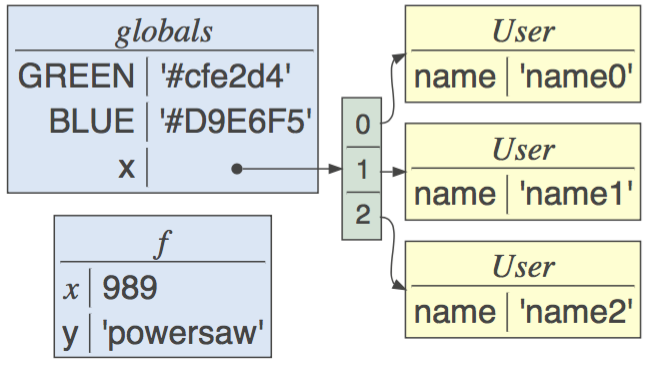
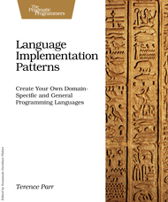
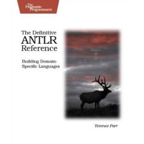
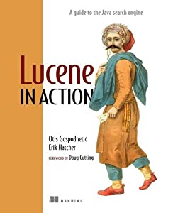
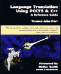

Coordinates
Room: 101 Howard Street, Room 607
Phone: +1 415 422 5707
Email: parrt@cs.usfca.edu
Twitter: @the_antlr_guy
Github: github.com/parrt
AI blog: explained.ai
Blog: blog.parr.us
Office hours: Any time door is open or by appointment
Mail:
101 Howard Street, Room 607
Data Science
University of San Francisco
San Francisco, CA 94105
Meetup: Join me for the weekly Seminar series in data science.
Motto: “Why program by hand in five days what you can spend five years of your life automating?”
Classes
MSDS501 Computation for Analytics »
MSDS621 Introduction to Machine Learning »
Previous
Bio
Terence is a professor of data science and computer science at the University of San Francisco. He cocreated and was founding director of the MS in data science program in 2012. While he is best known for creating the ANTLR parser generator, Terence has retooled as a machine learning and data science professor. Before entering academia in 2003, he worked in industry and co-founded jGuru.com. Terence herded programmers and implemented the large jGuru developers website, during which time he developed and refined the StringTemplate engine. Terence has consulted for and held various technical positions at companies such as Google, Salesforce, Sun Microsystems, IBM, Lockheed Missiles and Space, NeXT, and Renault Automation. Terence holds a Ph.D. in Computer Engineering from Purdue University.
In 2012, Terence was an expert witness for Google in the well-known Oracle v Google (Android/Java) trial. Ars Technica said: “Parr, a polished witness, seemed fresh and tireless on the stand.”. (The federal jury found in favor of Google, but the software copyright portion eventually worked its way all the way up to the Supreme Court.) He has since acted as an expert witness for Google in a second Android/Java lawsuit.
Educational philosophy
I have two primary teaching goals regardless of the course subject matter. First, I try to dramatically increase a student's self-expectations and, of course, their knowledge about the subject. Being a good teacher means stretching students without discouraging them or destroying their confidence. Second, I insist that students learn self-reliance; students must attempt solutions on their own and then, if they have failed, come to me for help. Students must get used to learning new concepts and technologies, solving their own problems, and doing their own research. As a programmer, they will constantly have to keep up with the latest advances to avoid becoming unemployable.
Ultimately, computer science is about writing software. My objective is to make students better programmers. If that requires some theoretical knowledge, they will get it, but I avoid gratuitous formalisms and passing "fad" theories.
Research and projects

My primary contribution is a parser generator for computer languages called ANTLR, which I’ve been working on since 1988. A parser generator helps programmers build parsers from a high-level grammatical specification rather than forcing them to laboriously implement parsers by hand using a generic programming language such as Java or C++. ANTLR has come to dominate the market for parser generators and has about 5000 programmers downloading the software every month, which is a lot for a specialized programming tool. Every big company, such Twitter, Google, Oracle, IBM, and Yahoo, have large applications based upon ANTLR. It also has broad reach internationally; e.g., the ANTLR website received 114,203 unique visitors from 179 countries just during February 1 - July 31, 2013. https://github.com/antlr/antlr4
Aside from the tool itself, my co-authors and I have made numerous contributions to parsing theory: embedding semantic predicates that get hoisted into parsing decisions, inventing and coining the term syntactic predicates, linear approximate lookahead for k>1 symbols, LL(*), and most recently ALL(*) parsers.

TensorSensor is library clarifies exceptions by augmenting messages and visualizing Python code to indicate the shape of tensor variables. It works with JAX, Tensorflow, PyTorch, and Numpy, as well as higher-level libraries like Keras and fastai.This library clarifies exceptions by augmenting messages and visualizing Python code to indicate the shape of tensor variables. It works with JAX, Tensorflow, PyTorch, and Numpy, as well as higher-level libraries like Keras and fastai. See article Clarifying exceptions and visualizing tensor operations in deep learning code.

dtreeviz is a python library for decision tree visualization and model interpretation inspired by an animation from R2D3: A visual introduction to machine learning. With dtreeviz, you can visualize how the feature space is split up at decision nodes, how the training samples get distributed in leaf nodes and how the tree makes predictions for a specific observation. These operations are critical to for understanding how classification or regression decision trees work. See article How to visualize decision trees.

-
rfpimp. Training a model that accurately predicts outcomes is great, but most of the time you don't just need predictions, you want to be able to interpret your model. The problem is that the scikit-learn Random Forest feature importance and R's default Random Forest feature importance strategies are biased. This library helps provide good importance functionality for Python.
- 
lolviz is a Python data-structure visualization package (it started out as just a List Of Lists visualizer) that can display the entire Python call stack and arbitrary object graphs. It's extremely useful for understanding how data structures look in memory and to see the connections between elements of a data structure. This package is primarily for use in teaching and presentations with Jupyter notebooks, but could also be used for debugging data structures. The look and idea was inspired by the awesome Python tutor. Take a look at the jupyter notebook of examples!
As part of the language implementation or translation process, programmers often need to generate structured text not just recognize it. From 2000, I have been working on a so-called template engine called StringTemplate, or ST for short. I originally developed ST to generate webpages in the large jGuru.com server during my startup days but it has since spread into the broader structured-text generation community; e.g., site statistics show 26,350 unique visitors from 95 countries February 1 - July 31, 2013. https://github.com/antlr/stringtemplate4
Books
 The Definitive ANTLR 4 Reference (amazon), Terence Parr, Pragmatic Bookshelf, Dallas Texas, 2013. ISBN 978-1934356999.
The Definitive ANTLR 4 Reference (amazon), Terence Parr, Pragmatic Bookshelf, Dallas Texas, 2013. ISBN 978-1934356999.
 Language Implementation Patterns (amazon), Terence Parr, Pragmatic Bookshelf, Dallas Texas, 2009. ISBN 978-1-93435-645-6.
 The Definitive ANTLR Referenced (amazon), Terence Parr, Pragmatic Bookshelf, Dallas Texas, 2007. ISBN 0-9787392-5-6.
 Section in Lucene in Action (amazon), Erik Hatcher and Otis Gospodnetic. Manning 2005.
 Language Translation Using PCCTS AND C++, Terence John Parr, Automata Publishing; San Jose, CA 1997 ISBN 0-9627488-5-4.
Publications
Terence Parr and James D. Wilson, Partial dependence through stratification in Journal Machine Learning with Applications, Volume 6 December 2021.
Terence Parr and Jurgen Vinju, Towards a Universal Code Formatter through Machine Learning. (Video) In Proceedings of The 9th ACM SIGPLAN International Conference on Software Language Engineering (SLE 2016). (Acceptance rate 17/53 = 32%, awarded The Distinguished Paper)
T. Parr, S. Harwell, and K. Fisher. Adaptive LL(*) parsing: The power of dynamic analysis. In Proceedings of the 2014 ACM SIGPLAN International Conference on Object-Oriented Programming Systems Languages and Applications, 2014. (Acceptance rate 53/185 = 28%)
Parr, T. and Fisher, K. 2011. LL(*): the foundation of the ANTLR parser generator. In Proceedings of the 32nd ACM SIGPLAN Conference on Programming Language Design and Implementation (San Jose, California, USA, June 04 - 08, 2011). PLDI '11. ACM, New York, NY, 425-436. DOI= http://doi.acm.org/10.1145/1993498.1993548 (Acceptance rate 55/236 = 23%)
Bovet, J. and Parr, T. 2008. ANTLRWorks: an ANTLR grammar development environment. Softw. Pract. Exper. 38, 12 (Oct. 2008), 1305-1332. DOI= http://dx.doi.org/10.1002/spe.v38:12
Parr, T. 2008. The Reuse of Grammars with Embedded Semantic Actions. In Proceedings of the 2008 the 16th IEEE international Conference on Program Comprehension (June 10 - 13, 2008). IEEE Computer Society, Washington, DC, 5-10. DOI= http://dx.doi.org/10.1109/ICPC.2008.36
Efendioglu, D., Faschetti, C., and Parr, T. 2006. Chronica: a temporal web search engine. In Proceedings of the 6th international Conference on Web Engineering (Palo Alto, California, USA, July 11 - 14, 2006). ICWE '06, vol. 263. ACM, New York, NY, 119-120. DOI= http://doi.acm.org/10.1145/1145581.1145609
Parr, T. 2006. Web application internationalization and localization in action. In Proceedings of the 6th international Conference on Web Engineering (Palo Alto, California, USA, July 11 - 14, 2006). ICWE '06, vol. 263. ACM, New York, NY, 64-70. DOI= http://doi.acm.org/10.1145/1145581.1145650
Parr, T. J. 2004. Enforcing strict model-view separation in template engines. In Proceedings of the 13th international Conference on World Wide Web (New York, NY, USA, May 17 - 20, 2004). WWW '04. ACM, New York, NY, 224-233. DOI= http://doi.acm.org/10.1145/988672.988703 (Acceptance rate 74/506=15%, nominated for Best Paper)
Parr, T. J. and Quong, R. W. 1996.
Parr, T. J. and Quong, R. W. 1995. ANTLR: a predicated-
Parr, T. J. and Rohaly, T. F. 1995. A language for creating and manipulating VRML. In Proceedings of the First Symposium on Virtual Reality Modeling Language (San Diego, California, USA, December 13 - 15, 1995). VRML '95. ACM, New York, NY, 123-131. DOI= http://doi.acm.org/10.1145/217306.217323
O'Keefe, M., Parr, T., Edgar, B. K., Anderson, S., Woodward, P., and Dietz, H. 1995. The Fortran-P Translator: Towards Automatic Translation of Fortran 77 Programs for Massively Parallel Processors. Sci. Program. 4, 1 (Jan. 1995), 1-21.
Parr, T. J. and Quong, R. W. 1994. Adding Semantic and Syntactic Predicates To LL(k): pred-LL(k). In Proceedings of the 5th international Conference on Compiler Construction (April 07 - 09, 1994). P. Fritzon, Ed. Springer-Verlag, London, UK, 263-277.
Parr, T. J. 1993 Obtaining Practical Variants of LL (K) and LR (K) for K Greater than 1 by Splitting the Atomic K-Tuple. Doctoral Thesis. UMI Order Number: UMI Order No. GAX94-03766., Purdue University.
Parr, T. J., Dietz, H. G., and Cohen, W. E. 1992. PCCTS reference manual: version 1.00. SIGPLAN Not. 27, 2 (Feb. 1992), 88-165. DOI= http://doi.acm.org/10.1145/130973.130980
Articles and rants
How to visualize decision trees
How to explain gradient boosting
Beware Default Random Forest Importances
The Matrix Calculus You Need For Deep Learning
An interview I did for dzone on ANTLR, managing open source projects, advice for open source authors
ANTLR v4: Honey Badger (video)
How to build a virtual machine (VM) (video)
Why Program by Hand in Five Days what You Can Spend Five Years of Your Life Automating? (video)
Cat people vs dog people (static vs dynamic typing) (slides)
Exercises in computational analytics (github source) (PDF)
Little Nybbles of Development Wisdom
Why writing software is not like engineering
Implementing Parsers and
State Machines in Java (Java VM Summit 2009)
The Essentials Of Debugging
How to read C declarations
Humans Should Not Have To Grok XML